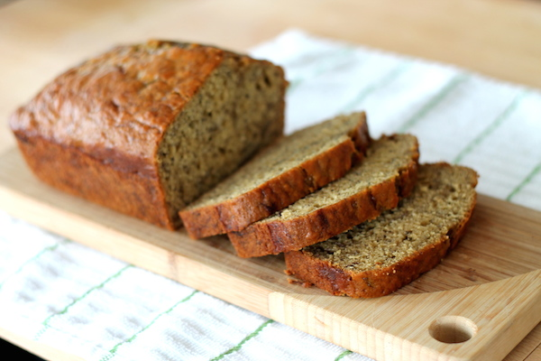

I'm currently studying Computer Science at
Utah State University
and I love it. I've been doing technical work either in school or in the workplace for close
to five years now, and nothing quite compares to solving challenging problems in code and
developing elegant algorithms.
I'm still working on my undergraduate work in college, but I'm currently planning on
pursuing a Computer Science PhD with an emphasis on artificial intelligence. I'm considering
doing my dissertation on a topic in natural language processing, but I haven't committed to
that quite yet.
As far as a career is concerned, I'm thinking of spending some time either writing technical
software for a company in a STEM field, working with medical suppliers to develop new
solutions for use in healthcare, or doing research and teaching at a university. To learn
more about my career plans and how I plan to use technology to accomplish my goals, visit my
second page.
Link to my second HTML page

My great-grandpa
One of my major hobbies outside of school and work is baking. I've been interested in it
ever since I read a story about my great-grandfather. His first career was as a baker in
Varde, the city in Denmark where
he grew up. Sometimes I think about him while I'm baking, wondering what it must have been
like to make breads and cakes a hundred years ago.
When I told my dad I wanted to learn to bake like my great-grandfather, he took me out to
buy my first cookbook, which I still use to this day. It's a Better Homes and Gardens book
filled with all sorts of baking goodies, from cookies and brownies to wedding cakes and
traditional swedish confections.
My favorite thing to bake is also the first thing I tried: banana bread. It's always been a
family favorite with my dad's family, and my Better Homes and Gardens cookbook has a
delicious recipe. You can find the book on amazon
here.
- 2 cups all-purpose flour
- 1 1/2 teaspoon baking powder
- 1/2 teaspoon baking soda
- 1/4 teaspoon salt
- 1/4 teaspoon ground cinnamon
- 1/8 teaspoon ground nutmeg
- 2 beaten eggs
- 1 1/2 cups mashed banana (5 medium)
- 1/2 cup cooking oil
- 1 teaspoon finely shredded lemon peel (optional)
- 1/4 cup chopped walnuts

|
-
Grease the bottom and 1/2 inch up the sides of a 9x5x3-inch loaf pan; set aside.
Combine flour, baking powder, soda, salt, cinnamon, and nutmeg. Make well in center
of dry mixture; set aside.
-
Combine eggs, banana, sugar, oil, and, if desired, lemon peel. Add egg mixture all
at once to dry mixture. Stir just until moistened (batter should be lumpy). Fold in
nuts.
-
Spoon batter into prepared pan. Bake in 350 degree oven 55 to 65 minutes or until a
wooden toothpick inserted near center comes out clean. (If necessary, cover wth foil
for the last 15 minutes of baking to prevent overbrowning.) Cool in pan on a wire
rack for 10 minutes. Remove from pan. Cool completely on wire rack. Wrap and store
overnight before slicing.
|
Some of my other hobbies include reading novels, writing poetry, and solving puzzles and
problems. My father is a mathemetician, and my mother a poet, so I grew up with in a very
academic setting. As a result, I've always done very well academically, as long as I can
find motivation to put in a little effort.
Most of the reading I do nowadays is either textbooks or fiction novels. My favorite author
is Brandon Sanderson, who is known for his epic fantasy books. If you're interested, check
out his website. I also enjoy
reading a good mystery novel.
Academically, I'm currently attending Utah State University. I'm in my Junior year of the
computer science program, and I've completed four semesters of classes here. The following
is a table of my classes to date.
| Fall 2012 |
Spring 2013 |
Fall 2013 |
Spring 2014 |
| CS 1400 |
CS 1410 |
CHEM 1210 |
CHEM 1220 |
| CS 1405 |
CS 2410 |
CHEM 1215 |
CHEM 1225 |
| ECN 1500 |
STAT 2300 |
CS 1410 |
CS 2420 |
| MATH 2210 |
USU 1350 |
CS 2610 |
ENGL 2010 |
| PSY 1010 |
- |
STAT 2300 |
MATH 3310 |
| USU 1330 |
- |
- |
- |